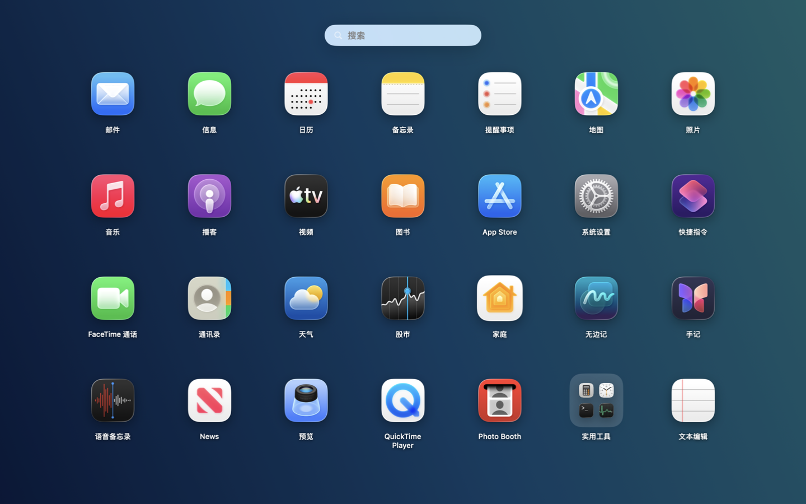
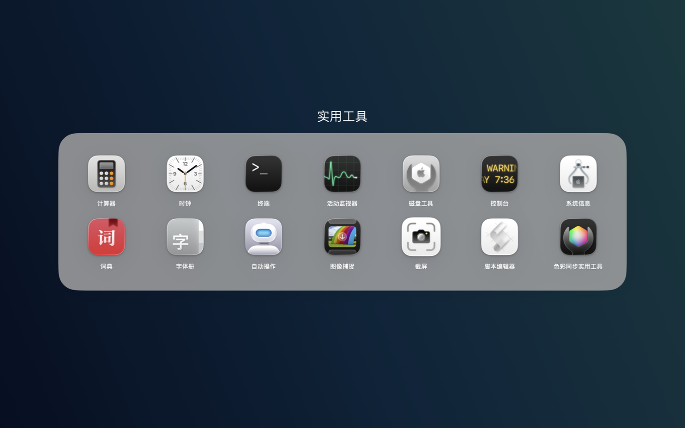

想到名字，就能找到
中文名称、拼音、首字母都能搜。不必记住应用完整的英文名字。
原生 macOS 应用 免费开源
一屏找到应用，像以前一样顺手。
为 macOS 26 带回全屏网格、拼音搜索和轻松翻页。
稳定版 v1.0.0 macOS 26.0+ Apple Silicon


简单的事，顺手完成
保留熟悉的操作，让注意力回到你要做的事。
中文名称、拼音、首字母都能搜。不必记住应用完整的英文名字。
所有应用一目了然。拖动图标调整顺序，下次打开，仍在你安排的位置。
用触控板两指翻页，也能在空白处用鼠标拖动。记住上次停留的页面。
下载 OpenLaunchpad.zip，双击解压得到应用。
将 OpenLaunchpad.app 移到「应用程序」，它的显示名称是「启动台」。
首次打开应用后，用快捷键、程序坞或菜单栏图标唤起启动台。
常见问题
不是。OpenLaunchpad 是独立开发的开源应用，使用 SwiftUI 和 AppKit 构建，与 Apple 无隶属关系。
不需要。OpenLaunchpad 免费使用，源代码采用 MIT 许可，可以在 GitHub 查看。
当前 v1.0.0 下载包仅包含 Apple Silicon 版本。Intel 用户可参照 仓库中的构建说明，在 Intel Mac 上从源代码构建。
目前公开下载的是稳定版 v1.0.0。本站界面预览包含 v1.1 开发版，文件夹、自定义网格和应用隐藏等功能尚未发布。正式版本会更新在 GitHub Releases 中。
当前发布包使用临时签名，尚未经过 Apple 公证。请确认下载来源是本项目的 GitHub Releases；确认后，可按 macOS 提示前往「系统设置 → 隐私与安全性」选择「仍要打开」。